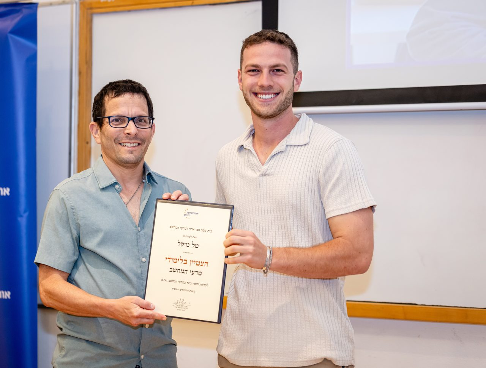

CS student shipping real software with AI, and looking for a team to grow with.
Studying Computer Science at Reichman University (GPA 92, Dean's List). I built skills for a company's AI agents that are still in use, and I'm the technical lead on a live AI-based PropTech platform.
An AI-based system that finds urban-renewal (pinui-binui) opportunities in Herzliya under the Shaked Alternative. It scans GIS data, runs feasibility workflows on each property, and stores the results in PostgreSQL. I built it end to end with Claude Code, from idea to live site, teaching myself as I went.
Built skills that make the company's AI agents work more accurately and efficiently. The company still uses them. Automated workflows with Node.js, Next.js, Playwright and the Chrome DevTools Protocol, plus the Semrush and Apollo APIs, and worked directly with stakeholders on requirements.
AI-Based Software Engineer InternLitigation Team · CO-OP program · Summer 2026
03
Nand2Tetris a computer from NAND gates
Built a complete computer starting from NAND gates in HDL, then wrote an Assembler and a VM Translator in Python and a game in Jack. The whole stack, from hardware logic up to a high-level language.
I build AI agents, so here's one that knows my CV and projects. Ask it what a recruiter would ask.
Answers come only from my CV and project write-ups, powered by Claude. It can make mistakes, so email me to confirm anything important.
tal-agent · online
agent
Hi! I'm Tal's agent. Ask me about Tal's projects, experience, skills or availability.
// about
I learn fastest by building. I taught myself from online tutorials to take Shakdan from an idea to a live site. Now I'm looking for a team where I can keep learning from experienced engineers, take on real responsibility and grow fast.
I'm a Computer Science student at Reichman University who builds with AI every day. This summer, as an AI-Based Software Engineer intern at Koladin through the CO-OP program, I built skills for the company's AI agents that are still in use. Before university I served as an Israel Air Force officer and commanded a team of 30 soldiers.

Academic excellence certificate · Reichman University
education
B.Sc. Computer Science, Reichman University · 2024 to March 2028 (expected)
grades
GPA 92 · Dean's List · Data Science 100 · Data Structures 94 · Intro to CS 94
IAF Unit 5700, Officer & Team Commander of 30 (2019–2024), Officers Course and an Excellence Badge · Jewish Agency service year, London · Elected Student Representative, Reichman
spoken
Hebrew (native) · English (fluent)
// contact
Let's build something.
I'm looking for a software developer role, especially work with AI agents, where I can learn from a strong team and contribute from day one.